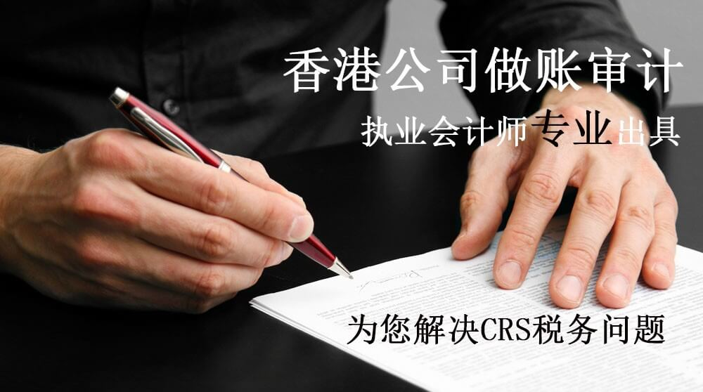
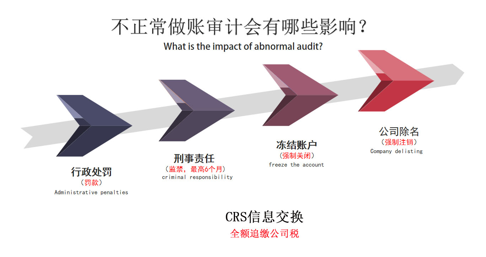
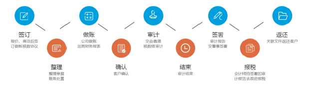
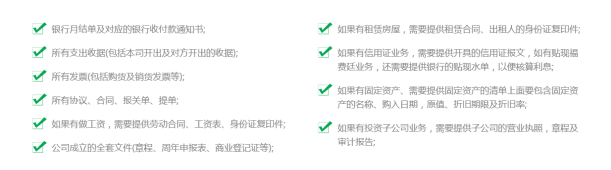
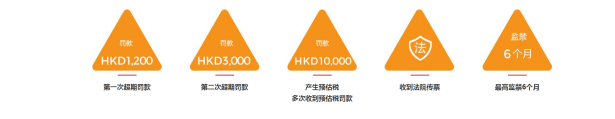

香港公司做账审计
洞悉您的需求，提供一站式服务
不正规做账审计报税会有哪些影响？
根据香港公司条例（第六百二十二章）及香港税务条例（第一百一十二章），香港注册的有限公司在注册后及做税务申报时必须要求被委任的香港执业会计师出具审计报告后，方可进行公司利得税申报。

CRS收到调查文件该如何处理？
受CRS税务影响，很多香港公司基本都会收到银行下发的商业调查信件（纸质版/电子版），
电子版调查信件主要发送到网银系统中/开户预留邮箱，这份调查信件主要分为三大部分：
温馨提示：汇丰、恒生每个账户都会收到（银行批次发放，时间问题），收到后不要慌张，
认真阅读查信内容，严肃对待，及时提交，若直接忽略，您的银行账户可能会面临冻结
香港公司做账、核数、报税流程
香港执业会计师为您专业出具审计报告

必备资料
NECESSARY INFORMATION

报税逾期罚款
TAX OVERDUE FINES
